Albert Guerra · Agua y Bienestar
¿Problemas con la cal en tu hogar o negocio?
Protege tus instalaciones, alarga la vida de tus equipos y recupera su eficiencia.
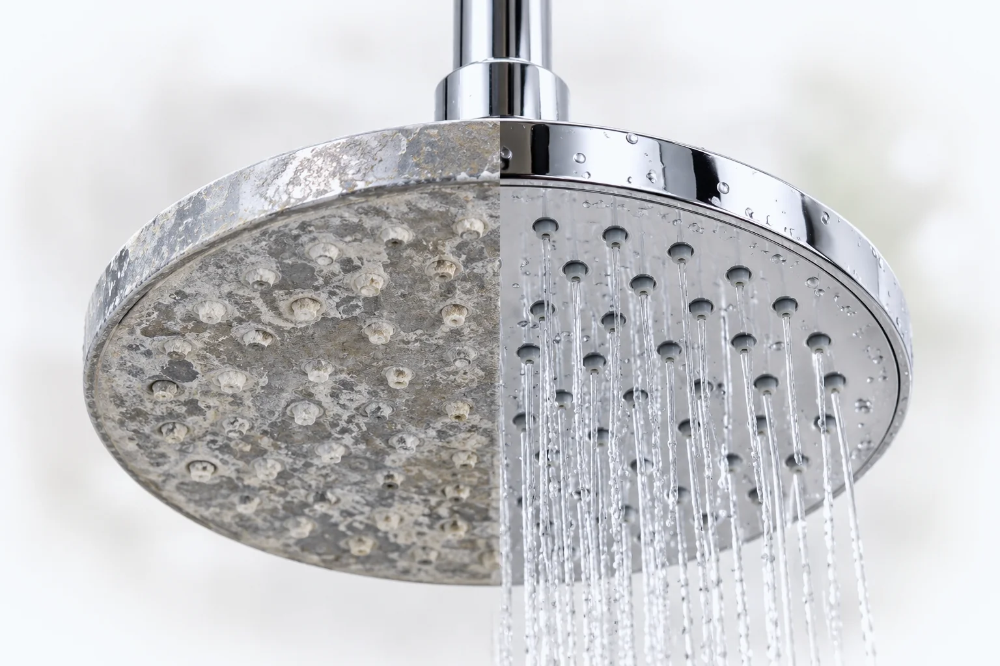
Antes DespuésLa cal puede estar deteriorando tu hogar sin que te des cuenta.
El agua puede cuidar tu hogar, o provocarte costes, averías y molestias.
La cal también puede acumularse en el interior de tuberías, calentadores, termos, resistencias y electrodomésticos como lavadoras, lavavajillas, cafeteras, hervidores, etcétera, provocando obstrucciones, pérdida de eficiencia, mayor necesidad de mantenimiento y posibles gastos en reparaciones o sustituciones.
Con el paso de los años, estas incrustaciones pueden afectar al funcionamiento de tus instalaciones, incluso en lugares donde no puedes verlas.
Costes, averías y molestias
- Obstrucciones
- Pérdida de eficiencia
- Mayor necesidad de mantenimiento
- Posibles gastos en reparaciones o sustituciones
Dónde se acumula
-
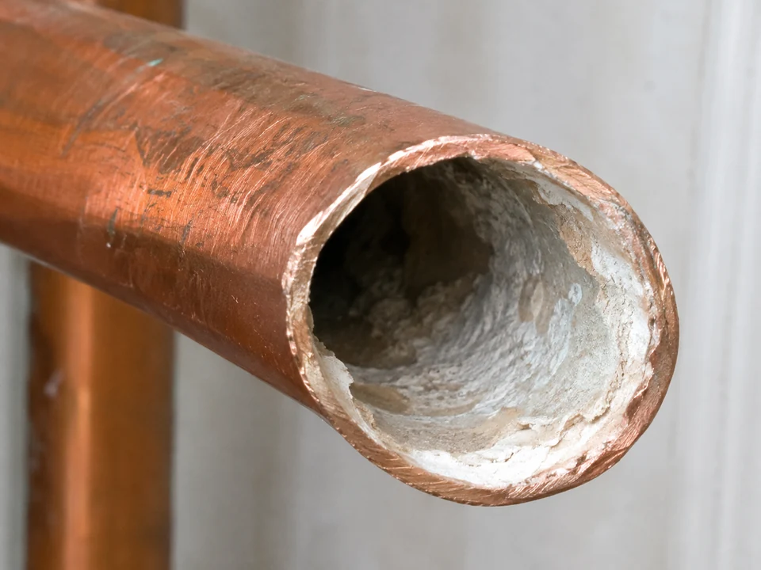
Incrustaciones en tuberías.
-
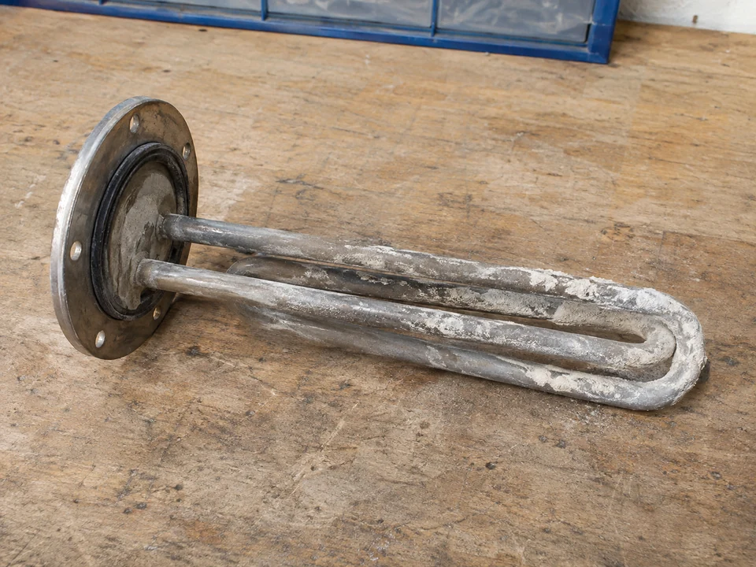
Menor eficiencia en calentadores.
-
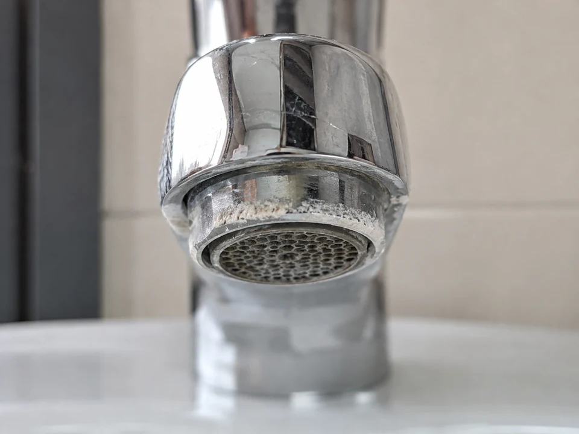
Cal en griferías y mamparas.
-
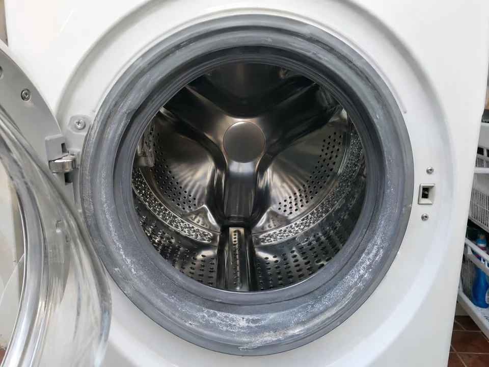
Más consumo, mantenimientos y reparaciones.
Cuidar tus instalaciones hoy es una manera de proteger tu hogar y evitar gastos innecesarios en el futuro.
La solución: IDAM CAL, tratamiento antical
Protege tu hogar frente a las incrustaciones de cal.
Tecnología japonesaTe ofrezco una tecnología japonesa que utiliza la energía polarizada de iones, de la que tenemos la exclusividad en España.
Se instala en la entrada principal de tu vivienda y está diseñada para proteger tuberías, calentadores, resistencias, griferías y electrodomésticos, ayudando a conservar sus condiciones de funcionamiento al inhibir la formación de nuevas incrustaciones de cal y favorecer la eliminación progresiva de la acumulada durante años.


Y todo ello con tres grandes ventajas:
-
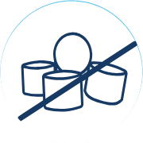
Sin sal -
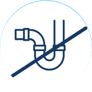
Sin desagüe -
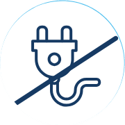
Sin electricidad
Incorpora cuatro funciones
01
Inhibidor de cal
Diseñado para dificultar la formación de nuevas incrustaciones de cal.

02
Desincrustante
Orientado a favorecer la eliminación progresiva de la cal acumulada durante años.

03
Anticorrosivo
Concebido para contribuir a la protección de las instalaciones frente a determinados procesos de corrosión.

04
Antioxidante
Diseñado para ayudar a proteger las tuberías frente a la oxidación asociada al contacto con el agua.

La tubería, antes y después
- Con depósitos de cal
- Con menos depósitos
Arrastra el control o, con el foco en la imagen, usa las flechas del teclado.
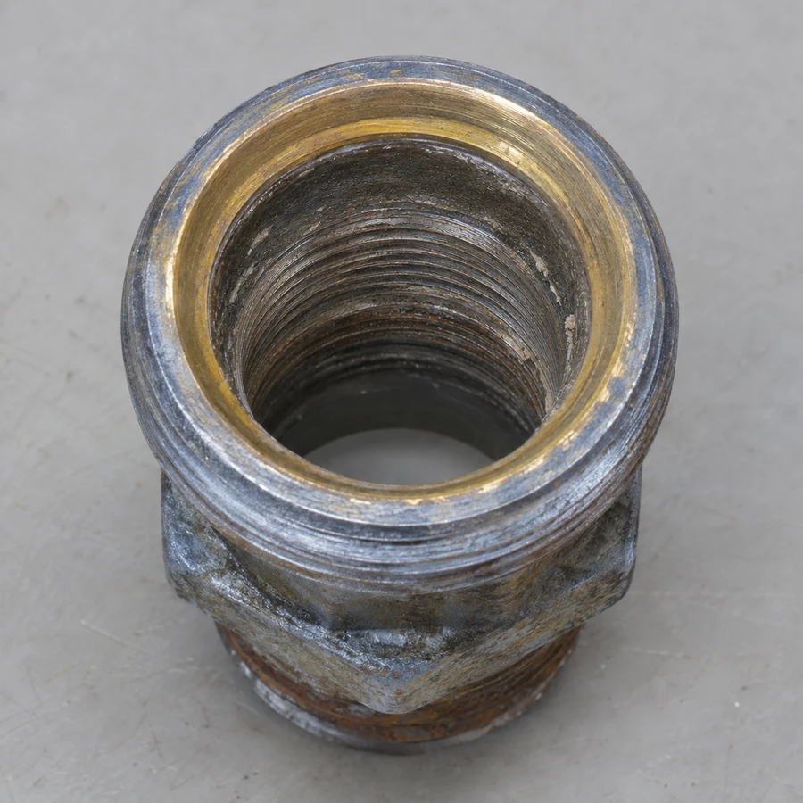
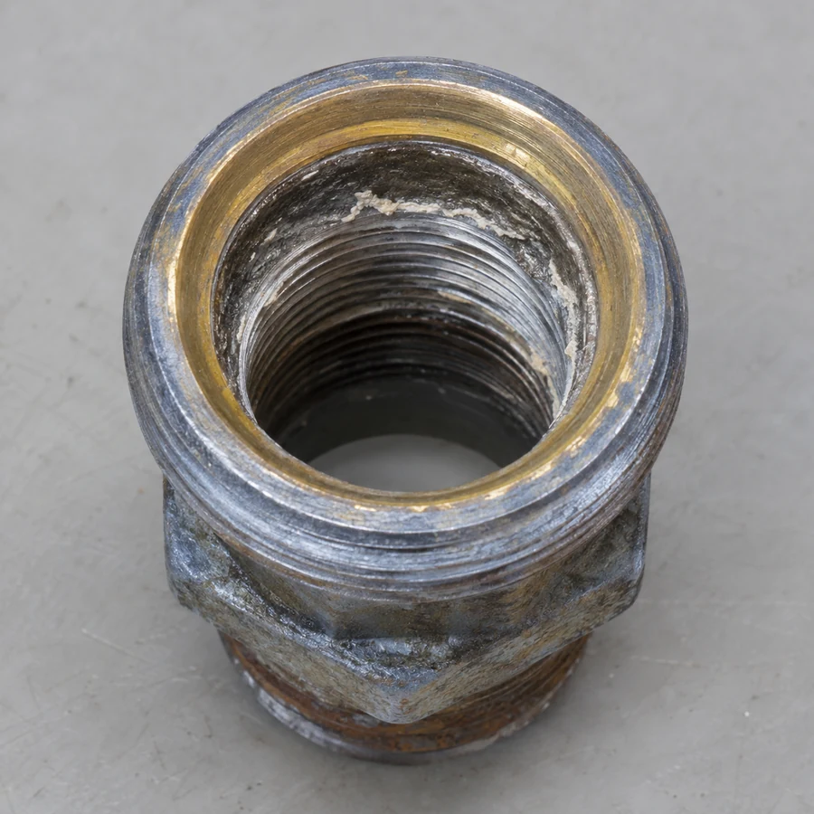
Un solo sistema para tratar el problema de la cal en toda la vivienda.
Quiero proteger las instalaciones de mi hogar¿Cómo saber si esta solución es adecuada para tu vivienda?
La mejor recomendación empieza por conocer tu agua.
Cada hogar tiene unas características diferentes y es por eso que, antes de recomendarte este sistema, quiero conocer tu situación.
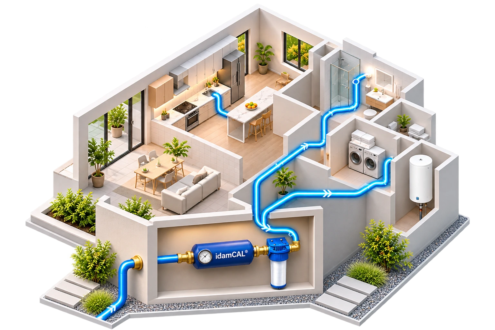
Así será tu visita gratuita a domicilio
- Paso 1
Escucharé tus necesidades. Me contarás qué problemas de cal estás experimentando y qué te gustaría solucionar.
- Paso 2
Realizaré una medición para conocer el nivel de dureza del agua de tu hogar.
- Paso 3
Haré una valoración de tu instalación, revisando las características necesarias para determinar la idoneidad del sistema.
- Paso 4
Conocerás cómo funciona la tecnología, sus características, las condiciones de instalación y la inversión necesaria.
- Paso 5
Podrás valorar toda la información y elegir lo que consideres más adecuado para tu hogar.
¿Quién soy?
Soy Albert Guerra, asesor independiente de soluciones para el tratamiento del agua.
Llevo cerca de 20 años asesorando a personas, escuchando sus necesidades y ayudándolas a encontrar soluciones.
Comencé mi trayectoria profesional precisamente en el sector del agua. Después de muchos años recorriendo otro camino profesional, decidí volver a mis orígenes, a un sector que realmente me apasiona y en el que siento que puedo aportar algo mucho más valioso a los demás.
Con los años, mi manera de entender el éxito también ha cambiado. Si antes daba más importancia a los resultados, hoy lo que más valoro es la confianza y la conexión que se crea con cada persona. Me gusta escuchar, hablar con transparencia, explicar las diferentes opciones y compartir sinceramente lo que yo haría en su lugar.
Creo que algo tan esencial en nuestras vidas como el agua merece mucha más atención de la que normalmente le prestamos. Por eso disfruto ayudando a las personas a conocer mejor el agua que consumen y las soluciones que existen para mejorar su calidad, comodidad y bienestar.
Para mí, lo más importante es marcharme de cada visita con la satisfacción de haberte aportado información de valor, con total transparencia, y de haberte ayudado sabiendo que cuentas con un asesor de confianza al que poder acudir cuando lo necesites.
Hoy lo que más valoro es la confianza y la conexión que se crea con cada persona.
Solicita tu visita¿Por qué confío en lo que recomiendo?
Contarás con mi asesoramiento cercano, instalación profesional, seguimiento de los mantenimientos y alguien de confianza que responda cuando lo necesites.
He conocido y probado diferentes sistemas de tratamiento de agua. Esa experiencia me ha llevado a trabajar con una empresa valenciana en la que confío, no solo por la calidad de sus equipos, sino también por el trato cercano, el respaldo y el seguimiento que ofrece tanto a mis clientes como a mí mismo. A día de hoy, confío en esta compañía que ha apostado por mejorar los sistemas de tratamiento de agua existentes, desarrollando y fabricando sus propios equipos. Una calidad respaldada por certificaciones y pruebas físicas, químicas y microbiológicas, con las que se evalúan aspectos de su funcionamiento, seguridad y calidad del agua tratada.
Mi compromiso es seguir aprendiendo, conocer nuevas tecnologías y mantener siempre la mente abierta a soluciones que puedan aparecer en el mercado. Porque para mí, asesorarte bien significa compartir contigo mi experiencia y recomendarte lo que realmente considero mejor para ti en cada momento ya que te comparto lo que conozco, lo que he probado y lo que yo mismo utilizo.
Porque tan importante es la calidad del equipo que eliges como la tranquilidad de saber que tienes detrás a personas y a una empresa que responden.